9.1
How to read a climate
The daily swing, humidity, sun and wind, and the charts that turn them into strategies
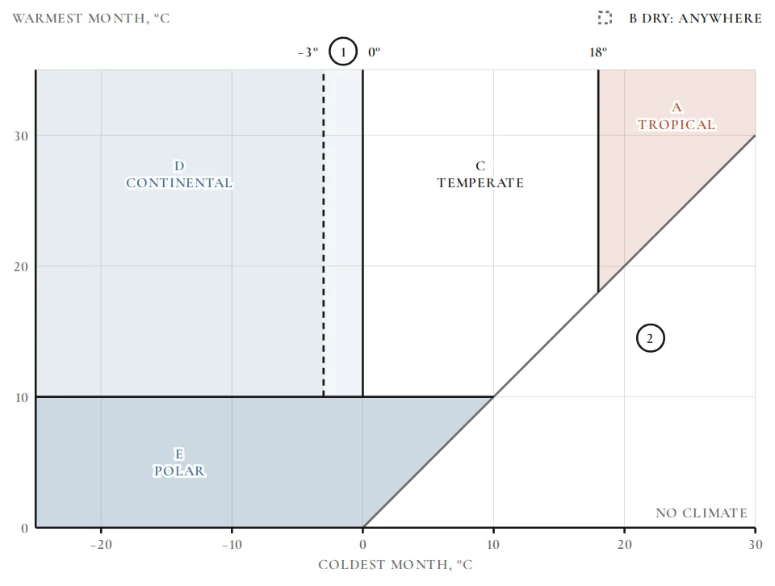
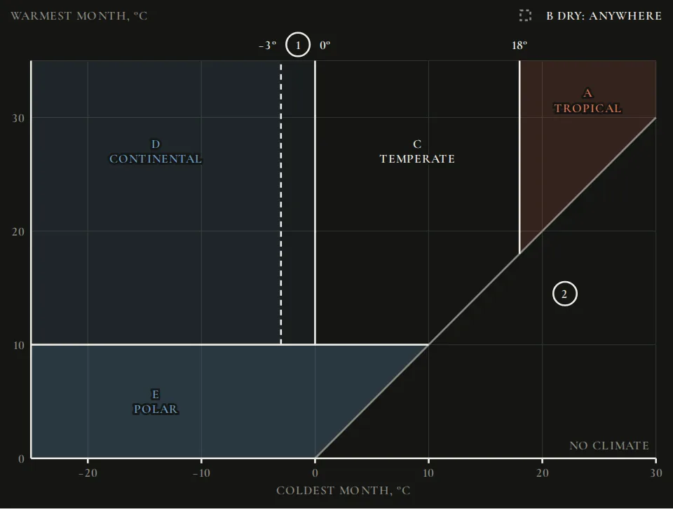
Köppen's groups
Imagine two places with the same average temperature in July. In the first, a desert, the days reach forty degrees and the nights fall to eighteen, and the air is dry. In the second, a tropical coast, the days reach thirty-two and the nights stay at twenty-six, and the air is heavy with moisture. Same average, opposite buildings. The desert wants heavy walls, small windows, shade and cool night air let in and stored. The coast wants a light, open, shaded house that catches every breeze, because the night brings little relief and there's nothing cool to store.
This last chapter puts the whole book together, climate by climate. It starts here, with how to read a climate: which numbers matter, how to find them, and the charts designers use to turn them into strategies.
How it works
Five things about a climate decide most of what a building should do.
The first is the daily swing: how far the temperature falls from afternoon to night. A big swing, more than about ten degrees, means heavy walls and night ventilation will work, as you saw in the chapter on earth and mass. Under about six degrees, they won't do much.
The second is humidity. In dry air, evaporation cools strongly, as in the chapter on water, and the night sky cools things quickly. In humid air, evaporation is weak, and what helps is moving air across the skin.
The third is the sun: how high it climbs, when you want it and when you don't. That's the first chapter's work. The fourth is the wind, its direction and strength in each season, which the chapter on air used. And the fifth is the extremes: the hottest spells, the coldest nights, the storms and floods, and now the fires.
The most widely used shorthand for a climate is the one devised by the climatologist Wladimir Köppen in 1884, and later revised by Rudolf Geiger. It sorts climates by the plants they support. Tropical climates, group A, have every month at eighteen degrees or warmer. Dry climates, group B, have too little rain for the heat. Temperate climates, group C, have a coldest month between zero, or minus three in some versions, and eighteen degrees. Continental climates, group D, have at least one month below that and at least one above ten degrees. And polar climates, group E, have no month above ten. It's a useful first label, but it was made for plants, not buildings: it doesn't tell you the daily swing, for example.
For buildings, the classic tools are bioclimatic charts. Victor Olgyay's chart, from the 1950s and 1960s, plots temperature against humidity with a comfort zone in the middle, and shows how shade, a breeze or the sun can widen it, for a person outdoors. Baruch Givoni's building chart adds zones around the comfort zone where passive strategies can bring the inside of a building into comfort: thermal mass, mass with night ventilation, evaporative cooling, natural ventilation and passive solar heating. Today, free software such as Climate Consultant, from the University of California, Los Angeles, plots every hour of a typical year on such a chart, with sixteen strategy zones, and counts the hours each strategy could cover.
Those typical years come from weather files. A typical meteorological year is one year of hourly weather, with each month picked, from twelve or more years of records, as the most typical. One widely used set covers about sixteen thousand places. But typical is the word: these files are made to leave out the extremes, so they're for designing everyday performance, not for testing a building against a heatwave.
The best examples
Some rules of thumb fall straight out of the numbers. Night ventilation needs a large daily swing, nights well below about twenty-two degrees, and dry air. Evaporative coolers work only in dry climates. There, the US Department of Energy says, they can cool the air by fifteen to forty degrees Fahrenheit, roughly eight to twenty-two degrees Celsius, using about a quarter of the energy of central air conditioning.
The most famous design procedure for hot climates is the Mahoney tables: six tables, developed for the United Nations around 1970, that turn monthly climate figures into advice on layout, spacing, openings, walls, roofs and shading. They've been used around the world ever since. But the research edition could find no study that checked their thresholds against measurements, and one comparison, for a city in Egypt, found that about seventy per cent of their advice didn't match what Climate Consultant recommended. That doesn't mean the tables are wrong. It means that both are procedures, not proof, and that the building has to be checked in the end.
Rules of thumb
One. Read the daily swing first. In a hot climate, a big swing calls for heavy walls and night ventilation; a small one, for a light, open, shaded building.
Two. Read the humidity. Dry air favours evaporative cooling and cool night skies; humid air favours shade and moving air.
Three. Read the sun: when you want it inside, and when you must keep it out.
Four. Read the wind, season by season, and the extremes: the heatwave, the cold snap, the storm.
Five. Use a whole year of hourly data, not averages, and test the design against the extremes separately.
Where it fails
Every chart assumes a comfort zone, and comfort depends on what people are used to, what they wear and what they can control, as the next lesson shows. Köppen's classes were made for plants. Typical years leave out the weather that does the damage. The Mahoney tables, as far as the research edition could find, were never checked against measurements, and many rules of thumb have been checked only loosely. And the weather file usually comes from an airport, which may be windier, cooler or hotter than your site. The honest conclusion: read the climate with these tools, then check the design with better ones, and after it's built, measure.
Recap
To sum up. Five things decide most of a building's strategy: the daily swing, the humidity, the sun, the wind and the extremes. Köppen's classes give a first label, based on plants. Bioclimatic charts, from Olgyay and Givoni to today's software, show which passive strategies suit which hours. Typical weather years are for everyday design, not for extremes. And rules of thumb follow from the numbers: night ventilation needs a big swing and dry air, and evaporative coolers need dry air too.
Check yourself
First question. Why can two places with the same average temperature need opposite buildings?
Because the daily swing and the humidity differ. A dry place with a big swing suits heavy walls and night ventilation; a humid place with warm nights suits a light, open, shaded building with moving air.
Second question. What does Givoni's building chart add to a comfort chart?
Zones around the comfort zone showing where passive strategies, such as thermal mass, night ventilation, evaporative cooling, natural ventilation and passive solar heating, can bring a building into comfort.
Third question. Why shouldn't you test a building against a heatwave with a typical weather year?
Because a typical year is built from the most typical months, and leaves out the extremes.
Sources and further reading
- Köppen: Wikipedia, Köppen climate classification.
- Bioclimatic charts: R. H. Pontes and colleagues, Clean Technologies and Environmental Policy 24 (2022, online 2021), on Olgyay's chart; A. N. Zoure and P. V. Genovese, Sustainability 14 (2022), on Givoni's chart; Society of Building Science Educators, Climate Consultant.
- Weather files: Wikipedia, Typical meteorological year; NREL, User's Manual for TMY3 Data Sets (2008).
- Rules of thumb: Wikipedia, Passive cooling; US Department of Energy, Energy Saver, Evaporative coolers.
- The Mahoney tables: Wikipedia, Mahoney tables; G. Elshafei and colleagues, Civil and Environmental Engineering 20 (2024); research edition, chapter 4 (C4.33).
9.2
Hot and dry
Shade, mass, the courtyard, moving air and water, together
Alley, Ghadames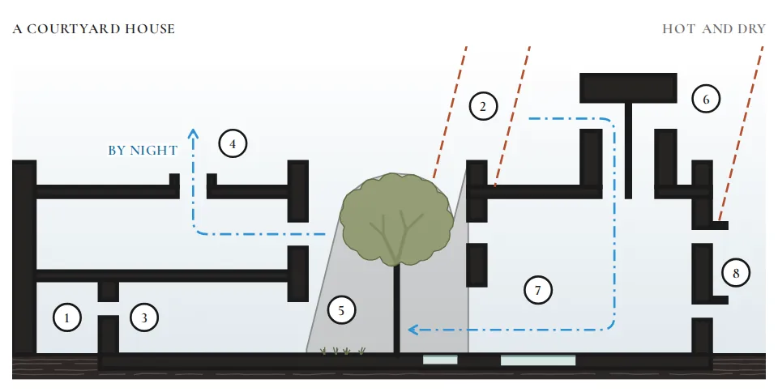
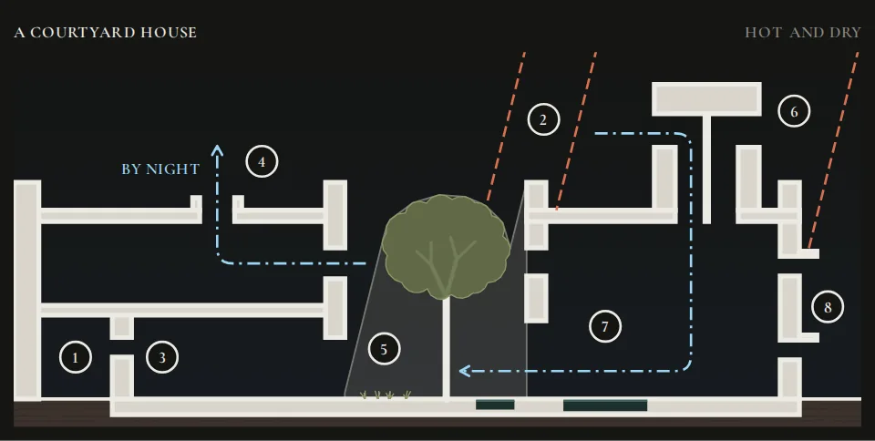
Hot and dry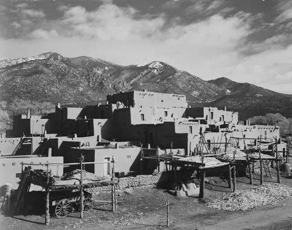
Taos Pueblo, 1941
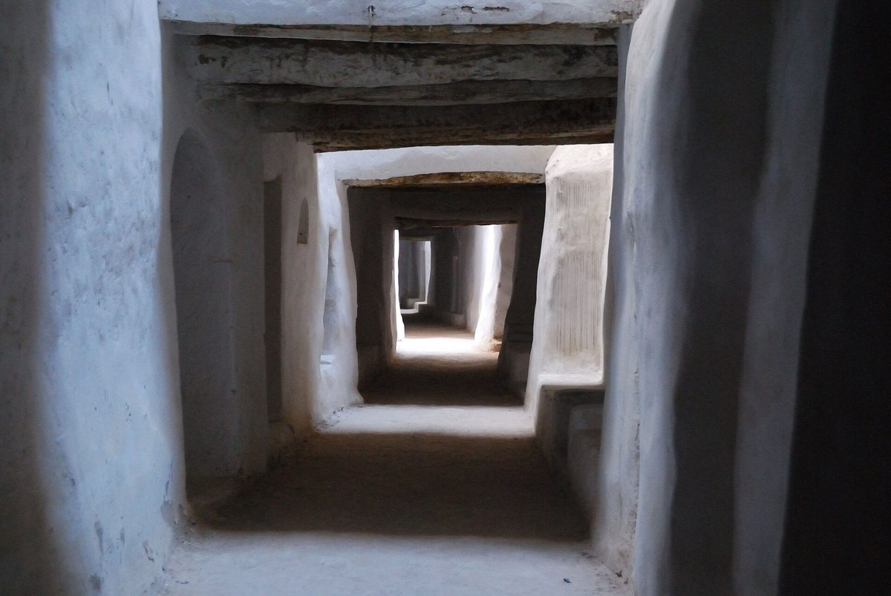

Ghadames, an oasis town in the Libyan Sahara, is built almost as one great house. Its homes stand shoulder to shoulder, with storage on the ground floor and the family rooms above, and they bridge over the streets, so that the alleys run through shade, like an underground network of passages. The roofs are terraces, and by tradition they were the women's domain. The old town has been on the World Heritage List since 1986.
In the summers of 1997 and 1998, in a town where summer days can pass forty-seven degrees, researchers surveyed two hundred and thirty-seven people living in twenty-four of the old, naturally ventilated houses and in twenty-seven air-conditioned ones. The standard comfort index predicted that the people in the old houses would be uncomfortable. Yet they were more satisfied than the people with air conditioning. This lesson gathers the whole toolkit for hot, dry climates, from every chapter of the book, and looks at how it works together.
How it works
Hot, dry climates have strong sun, dry air, and usually a big swing between day and night. Each of those is an opportunity as well as a problem.
First, shade everything. The sun is the main source of heat, so shade the roof, the walls, the windows and the outdoor spaces too. Narrow streets, covered alleys and deep courts shade each other, as at Ghadames. That's the first chapter's lesson on too much sun.
Second, use mass. Thick walls of earth or stone soak up the day's heat and give it back hours later, so the rooms stay near the day's average while the outside swings. That was the chapter on earth and mass, with its rule: heavy construction where the swing is more than about ten degrees.
Third, flush with night air. Open up at night to carry away the heat the walls stored, and close up by day. Mass without night ventilation just fills up with heat.
Fourth, make a courtyard, shaded, planted and watered. A good court is a reservoir of cooler air, and the rooms open onto it rather than onto the hot street. But it cools by being shaded, not by being open to the sky: an unshaded court can be hotter than the street.
Fifth, move the air and cool it with water. Wind catchers and stacks draw air through the house, as in the chapter on air. In dry air, water evaporating in the air's path, from a pool, a fountain or a wet surface, can cool it sharply, as in the chapter on water. Modern evaporative coolers do the same with a fan and a wet pad.
And finally, keep openings small and shaded on the sunny sides, use pale colours, and plan compactly, so there's less surface for the sun to heat.
The best examples
Ghadames, from the opening, shows the whole toolkit working at the scale of a town, and it shows something else: the comfort index said the old houses failed, and the people living in them said they worked. When a standard and the occupants disagree, the question may be the standard as much as the building. People in naturally ventilated houses adapt, open and close things, move around the house through the day, and dress for the climate.
New Gourna, the village Hassan Fathy built near Luxor from 1946, which you met in the chapter on earth, has recently been measured, together with a Nubian village near Aswan. Inside the houses it was two point seven to six point seven degrees cooler than the outdoor air. But the courtyards peaked at thirty-nine and forty-three degrees, almost as hot as the air outside, and at the Nubian house, one May afternoon, the court measured slightly hotter than the air outside. Again: the court helps only when it's shaded.

In the high desert of New Mexico, Taos Pueblo has stood since the late thirteenth or early fourteenth century: terraced houses of adobe, up to five storeys, replastered by the people who live there whenever they need it. Hot and dry doesn't always mean hot all year: here the winters are cold, and the same heavy walls that hold off the summer's heat hold the winter's warmth. Rain and snow wearing away the earth walls are among its listed threats.
And in Yazd, in Iran, the wind catchers and the water brought by qanats, from the chapters on air and water, complete the picture: air drawn down into the house, and water cooling it.
Rules of thumb
One. Shade first: roofs, walls, windows, streets and courts.
Two. Build heavy where the daily swing is large, and let the walls carry the day's heat into the night.
Three. Open at night and close by day, so the stored heat is flushed out.
Four. Make courtyards small and deep enough to stay shaded, and plant and water them.
Five. Use water to cool the air, but only where the air is dry, and count the water it costs.
Where it fails
Night flushing fails when the nights stay warm, in heatwaves and in the hot centres of cities. Evaporative cooling uses water, which dry places have least of. Heavy walls fill up with heat in a long hot spell, and then give it back at night, when people want to sleep. Unshaded courts overheat. Earth walls need upkeep, as at Taos. And comfort standards can misjudge naturally ventilated buildings, in both directions, so ask the people who live in them.
Recap
To sum up. Hot, dry climates call for shade, mass, night ventilation, shaded and watered courtyards, moving air, and water where the air is dry. At Ghadames, the comfort index predicted discomfort, and the residents of the old houses were more satisfied than those with air conditioning. At New Gourna and near Aswan, the rooms stayed several degrees cooler than outside, but the courts were about as hot as the air outside, and once slightly hotter. And at Taos, the same heavy walls work in summer and in a cold winter.
Check yourself
First question. Why does a hot, dry climate suit heavy walls?
Because the daily swing is large. Heavy walls soak up the day's heat and release it hours later, so the rooms stay near the day's average, especially if the stored heat is flushed out with night air.
Second question. What did the survey at Ghadames find?
The standard comfort index predicted discomfort in the old, naturally ventilated houses, but their residents were more satisfied than people in air-conditioned houses.
Third question. When does a courtyard help, and when doesn't it?
It helps when it's shaded, planted and watered, acting as a reservoir of cooler air. Unshaded, it can be as hot as the street, or hotter, as measurements at a Nubian house near Aswan showed.
Sources and further reading
- Ghadames: UNESCO World Heritage List, 362, Old Town of Ghadamès; M. A. Ealiwa and colleagues, Building and Environment 36 (2001); research edition, chapter 2 (C2.5).
- New Gourna: A. S. H. Abdallah and colleagues, Buildings 15 (2025); research edition, chapter 2 (C2.5).
- Taos Pueblo: UNESCO World Heritage List, 492, Taos Pueblo.
- Evaporative coolers: US Department of Energy, Energy Saver, Evaporative coolers.
- The toolkit: lessons 1.4, 2.3, 2.4, 3.1, 4.1 and 4.2 of this book, and their sources.
9.3
Hot and humid
Lift, open, shade and move the air
Swahili house, Lamu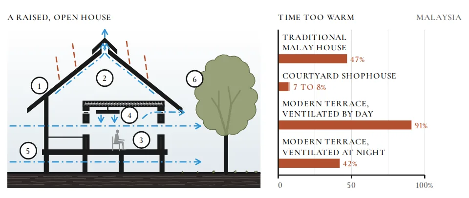
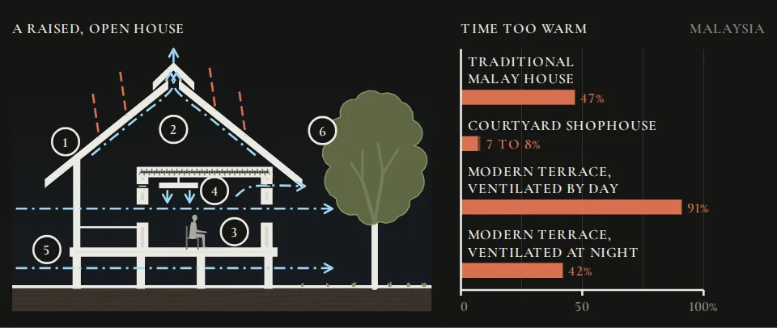
Hot and humid

On the island of Lamu, off the coast of Kenya, the old stone town has been lived in for more than seven hundred years, and UNESCO calls it the oldest and best-preserved Swahili settlement in East Africa. Step in from one of its narrow streets and you pass through a porch with stone benches, where visitors are received, into a small courtyard, and then through long, narrow galleries, one behind another, to the innermost room. The walls are coral stone and lime. The floors and roofs rest on poles of mangrove wood, which span about three metres, and so set the width of every room. High openings let the hot air out.
The Swahili house is one answer to a hot, humid coast. This lesson collects the others, and the whole toolkit for hot, humid climates: why the rules are so different from the desert's, what the measurements say, and what a ceiling fan can do.
How it works
In a hot, humid climate, the day and the night differ by only a few degrees, and the air is already full of moisture. That changes everything. Heavy walls have little cool night air to discharge their heat into. Evaporation, so powerful in the desert, is weak. What still works is keeping the sun off, and keeping air moving across the skin, which carries heat and sweat away.
So the toolkit reads differently. Shade the whole building, walls as well as windows, with big roofs, deep eaves and verandas, as in the lesson on prospect and refuge. Keep the radiant heat of the roof off the rooms below, with a light, ventilated roof or a high ceiling, as in the first chapter's lesson on too much sun. Open the plan to the breeze: rooms one deep, openings on opposite sides, and high vents to let warm air out, as in the chapter on air. Raise the floor, where floods, damp and insects threaten, and to catch more wind, as the Malay house and the Queensland house do. And use light materials that don't store the day's heat, unless you have a way to cool them.
The best examples
The most useful measurements compare kinds of house. A study of houses in Malaysia, published in 2015, compared how much of the time, on fair-weather days, three types of house were too warm for the comfort limit that eighty per cent of people accept. The traditional raised Malay house was above it forty-seven per cent of the time. The old courtyard shophouses of the towns, with their heavy walls, deep plans and open courts, were above it only seven or eight per cent of the time. And modern terraced houses were above it ninety-one per cent of the time when they were ventilated by day, and forty-two per cent when they were ventilated at night. The surprise is the shophouse: heavy walls, shade and a court did better than the light, open house. And the modern house did best when it was opened at night and closed by day.
Then there's the ceiling fan. In an office in Singapore, researchers gave people control of ceiling fans and raised the air-conditioning setting from twenty-three degrees to twenty-six. The share of people who found the conditions acceptable rose from fifty-nine per cent to ninety-one, and the office saved an estimated forty-four kilowatt-hours of cooling electricity per square metre a year. Even at twenty-seven degrees, with the fans, people were no less comfortable than they had been at twenty-three without them.
In the middle of the twentieth century, a school of tropical modern architecture set out to write the rules down. Maxwell Fry and Jane Drew published books on building in the tropics in 1947, 1956 and 1964, and Otto Koenigsberger ran the tropical department of the Architectural Association in London from 1957 to 1971. In Sri Lanka, Geoffrey Bawa built some of the most admired buildings of the tropics, like the Kandalama Hotel of the early 1990s, open to the breeze and wrapped in forest. As far as the research edition could find, none of Bawa's buildings has been measured, and the tropical modernists' rules were rarely checked against measurements.
Rules of thumb
One. Shade the whole building, walls as well as windows, with big roofs, deep eaves and verandas.
Two. Keep the roof's heat off the rooms: a light, ventilated roof, a pale or reflective surface, and air space beneath.
Three. Open the plan to the breeze: rooms one deep, openings on opposite sides, and high vents.
Four. Add ceiling fans. With moving air, people are comfortable several degrees warmer, which saves a great deal of cooling.
Five. Where you have heavy walls, cool them at night and close them by day, as the courtyard shophouse and the night-ventilated terrace did.
Where it fails
A light, open house can't make the air cooler than the shade outside, and in the Malaysian study the traditional house was too warm nearly half the time on fair days. Open houses let in noise, dust, insects and rain, and in dense cities the breeze is blocked by the buildings around. The tropical modernists' rules were rarely checked against measurements, and as far as the research edition could find, the coral stone of the Swahili house has never had its thermal properties measured. And many people in hot, humid cities now live in sealed, air-conditioned rooms, which is a different design problem: then the shade, the insulation and the fans decide how much energy the cooling takes.
Recap
To sum up. In hot, humid climates the daily swing is small and the air is moist, so the tools are shade, moving air and keeping radiant heat off: big roofs and verandas, light ventilated roofs, open plans, raised floors, and ceiling fans. In Malaysia, the heavy, courtyard shophouse outperformed the light, raised house, and modern houses did best ventilated at night. In Singapore, fans let people accept twenty-six or twenty-seven degrees as readily as twenty-three.
Check yourself
First question. Why don't heavy walls and evaporative cooling work as well in a hot, humid climate as in a desert?
Because the nights are only a little cooler than the days, so there's little cool air to flush the stored heat, and the air is already moist, so evaporation is weak.
Second question. In the Malaysian study, which kind of house was too warm least often?
The old courtyard shophouse, above the comfort limit only seven or eight per cent of the time, against forty-seven per cent for the traditional Malay house.
Third question. What did the ceiling fans do in the Singapore office?
With fans under their control, people found twenty-six degrees acceptable, acceptability rising from fifty-nine to ninety-one per cent, and the office saved an estimated forty-four kilowatt-hours per square metre a year.
Sources and further reading
- Lamu and the Swahili house: UNESCO World Heritage List, 1055, Lamu Old Town; Archnet; research edition, chapter 2 (C2.20).
- The Malaysian houses: D. H. C. Toe and T. Kubota, Solar Energy 114 (2015).
- Ceiling fans: A. Lipczynska, S. Schiavon and L. T. Graham, Building and Environment 135 (2018).
- Tropical modernism: Wikipedia, Jane Drew, Otto Koenigsberger, and Geoffrey Bawa; V. Baweja, Docomomo Journal 63 (2020); research edition, chapter 4.
- The toolkit: lessons 1.4, 2.2 and 8.2 of this book, and their sources.
9.4
Temperate
Sun in winter, shade in summer, and mass in between
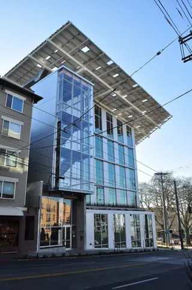
Bullitt Center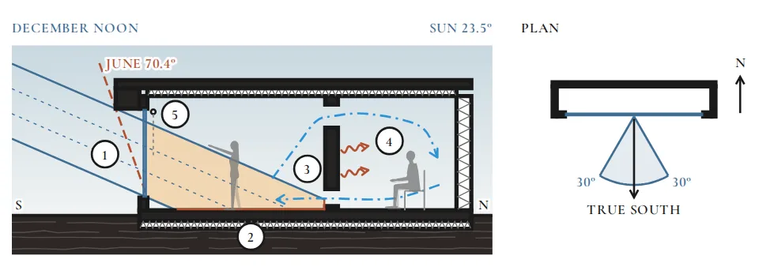
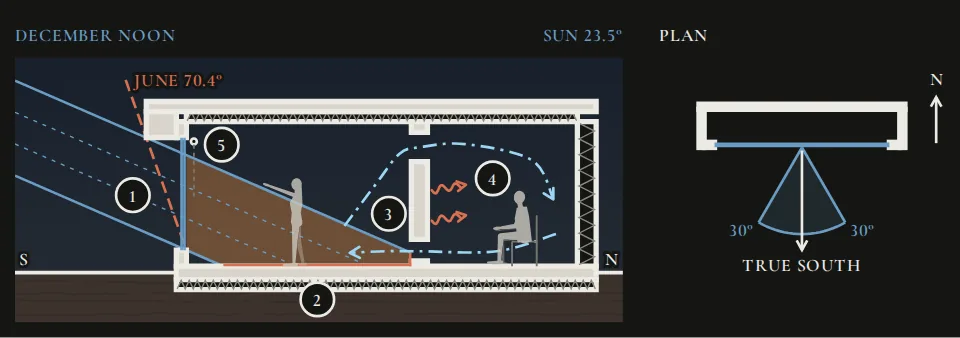
Passive solar design

On Earth Day, the twenty-second of April 2013, a six-storey office building opened in Seattle with an unusual set of ambitions: to make all its own electricity from the sun on its roof, to collect its water from the rain, and to last two hundred and fifty years. The Bullitt Center, designed by the architects Miller Hull, carries five hundred and seventy-five solar panels, stores rain in a cistern of about fifty thousand gallons, and cleans its greywater in a planted wetland. In 2015 it was certified as a Living Building, one of the most demanding green standards there is.
Seattle's climate is temperate: mild, wet winters and dry, warm summers, neither extreme. Temperate climates are where the whole book's toolkit can be used in balance, and where it's easiest to get the balance wrong. This lesson is about that balance, the passive solar principles that organise it, and what the most famous examples really achieved.
How it works
In a temperate climate, a building needs heat in winter and protection from heat in summer, and the same elements have to do both jobs. The US government's guide to passive solar design, from 2001, names five of them. The aperture: south-facing glass, within thirty degrees of true south in the northern hemisphere, and clear of shadow from nine in the morning to three in the afternoon through the heating season. The absorber: the surface the sun lands on, such as a dark floor. The mass: the material that stores the heat, and releases it later. The distribution: how the heat moves to the rest of the house. And the control: overhangs, awnings and blinds that keep out the summer sun.
The balance between them is everything. Too much glass and too little mass, and the house overheats, even in winter, and then loses its heat fast at night. Too little glass and it's dark and needs heating. The overhang has to be sized so that it lets in the low winter sun and stops the high summer sun, as you worked out in the first chapter. And none of it works without the lessons of the chapter on earth and mass: insulation, airtightness and ventilation on purpose. The sun can't heat a house that leaks.
In summer, the temperate toolkit borrows from the hot climates: shade the glass, ventilate across the house, and use the mass with night ventilation when the nights are cool. Deciduous trees and vines, from the chapter on living things, give shade in summer and let the sun through in winter.
The best examples
Frank Lloyd Wright's Solar Hemicycle, the Jacobs house in Wisconsin, which you met in the first chapter, got the geometry right: a curved wall of glass fourteen feet high facing south, an overhang sized to shade it at the midsummer noon, and an earth bank against the north. The family who built it remembered that even in deep winter the heating could be turned off from nine in the morning until late in the afternoon. But a later owner burned about three and a half thousand gallons of oil a year in a house that stayed cold. The roof was uninsulated, and the heating pipes in the floor slab lost much of their heat into the gravel beneath. The sun was doing its part; the envelope wasn't.
And the Bullitt Center? Its architects say it has run net-positive, making more energy than it uses, since it opened in 2013. One widely repeated figure says that in 2016 it produced nearly thirty per cent more than it used, using about an eighth of the energy of an average commercial building in Seattle. But the source given for that figure predates the building's opening, and the research edition found no published, independent record of its totals. The building shows its data live on a dashboard, which can't be cited or checked later. And there's a lesson in its water, too: in 2021, its composting toilets were replaced with vacuum-flush toilets, for a better experience for the people using them and less maintenance.
Village Homes, in Davis, California, from the chapters on sun and water, shows the temperate toolkit at the scale of a neighbourhood: every street running east and west, so every house can face south, and most of the rainwater kept on the land.
Rules of thumb
One. Face the main glass within thirty degrees of true south, and keep it clear of shadow from nine to three in winter.
Two. Size the overhangs for the summer sun, and add deciduous shade on the east and west.
Three. Balance the glass with mass: more glass needs more mass to store its heat, or the house will overheat.
Four. Insulate and seal first. The sun can't heat a leaky, uninsulated house.
Five. Measure and publish. Record the building's real energy and water use, and publish it where it can be read and checked later.
Where it fails
Passive solar design fails when it's pushed too far: too much glass overheats a house, even in a temperate climate, as the chapters on sun and on earth showed. It fails when the envelope is poor, as at the Solar Hemicycle. Ambitious systems need willing users and upkeep, which is why the Bullitt Center changed its toilets. And temperate climates are changing: summers that used to be mild are bringing heatwaves, which the last lesson turns to.
Recap
To sum up. In temperate climates, the same building must welcome the sun in winter and keep it out in summer. Passive solar design has five elements: the aperture, south-facing within thirty degrees; the absorber; the mass; the distribution; and the control. Balance glass with mass, size the overhangs, and insulate and seal first. The Solar Hemicycle had the right geometry and a poor envelope. The Bullitt Center aimed higher than almost any building, but its results are published live, not durably.
Check yourself
First question. What are the five elements of passive solar design?
The aperture, or south-facing glass; the absorber; the thermal mass; the distribution of the heat; and the control, such as overhangs and blinds.
Second question. Why was the Solar Hemicycle cold for a later owner, despite its good solar geometry?
Because its roof was uninsulated and the heating pipes lost heat into the gravel under the slab. The envelope, not the sun, was the weak point.
Third question. What's the problem with the Bullitt Center's energy figures?
The widely repeated figure cites a source older than the building, and no independent, published record of its totals was found; its data is shown live on a dashboard, which can't be cited or checked later.
Sources and further reading
- The Bullitt Center: Wikipedia, Bullitt Center; Miller Hull, Bullitt Center; research edition, chapter 6 (C6.31).
- Passive solar design: US Department of Energy and National Renewable Energy Laboratory, Passive Solar Design for the Home (2001).
- The Solar Hemicycle: Wikipedia, Herbert and Katherine Jacobs Second House; research edition, chapter 4 (C4.10).
- Village Homes: lessons 1.5 and 4.5 of this book, and their sources.
9.5
Cold
Compact, insulated, sealed, and ventilated on purpose
Bahnstadt, Heidelberg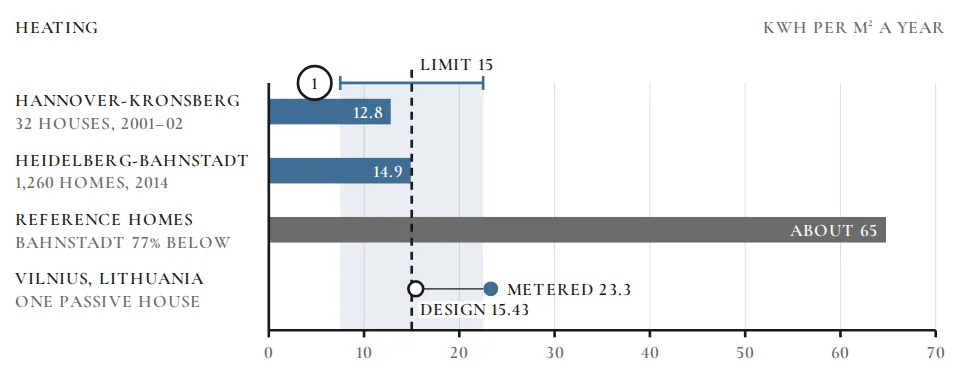
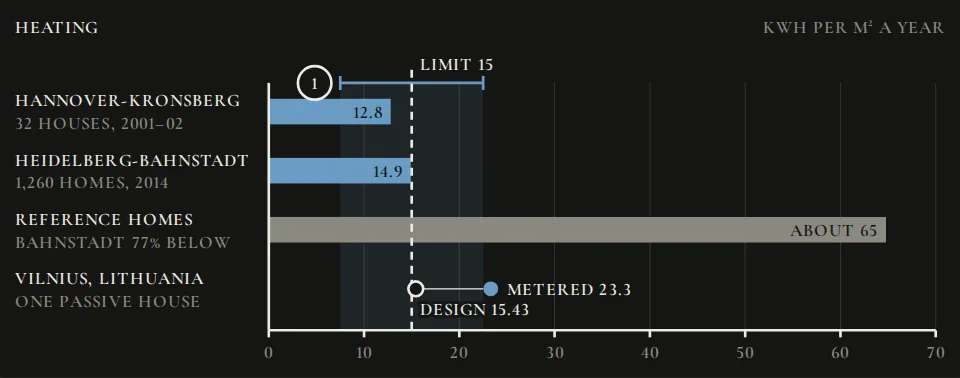
Cold
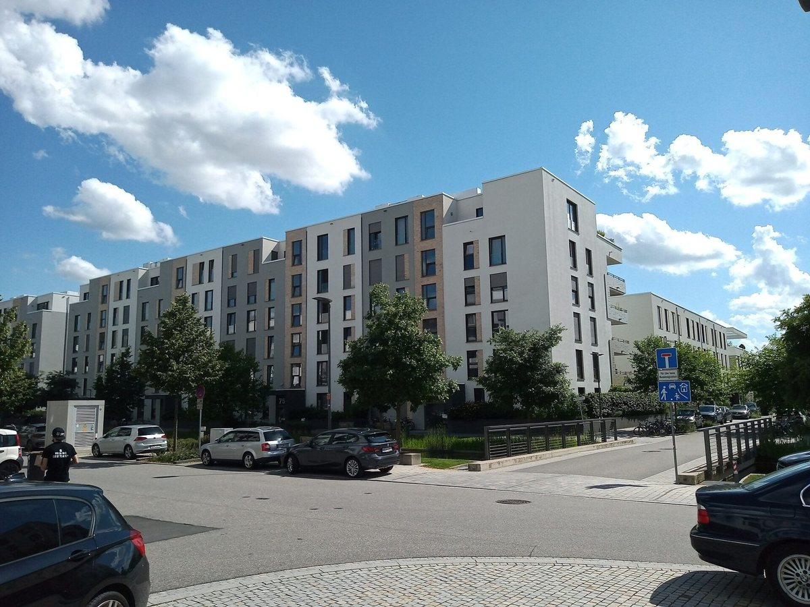

In the German city of Heidelberg, a whole new district, the Bahnstadt, has been built to the Passive House standard. In 2014, the heating of one thousand two hundred and sixty of its homes was measured. On average they used 14.9 kilowatt-hours of heat per square metre over the year, seventy-seven per cent less than the reference homes they were compared with. Not one showpiece, but a neighbourhood.
You met the principles of building for the cold in the chapter on earth and mass: the snow house, the turf house and the Sámi turf hut, and the first Passive House at Darmstadt. This lesson puts them together as a toolkit, and asks the questions that matter when you design for cold: does it work at scale, does it work where the winters are really hard, and what do the people inside do to it?
How it works
The cold-climate toolkit has a clear order.
First, make the building compact. Heat escapes through the surface, so the less surface for the space inside, the less heat lost. A simple, compact block loses far less than a spread-out plan with wings, bays and corners, as the chapter on earth and mass calculated.
Second, insulate thickly and continuously, with no gaps and no weak spots, the thermal bridges where a beam, a balcony or a window frame carries heat straight through.
Third, seal the building carefully, then ventilate it on purpose, through a heat exchanger that warms the incoming fresh air with the outgoing stale air. The Passive House standard asks for no more than six-tenths of an air change an hour at fifty pascals, and no more than fifteen kilowatt-hours of heating per square metre a year.
Fourth, count the free heat: the sun through south-facing windows, and the warmth of people, cooking and lamps. In a tight, well-insulated building, they supply much of the heating. How much is free heat worth? Take a flat of a hundred square metres built to the Passive House limit: fifteen kilowatt-hours per square metre comes to fifteen hundred kilowatt-hours of heating a year. A person at rest gives off about a hundred watts. Two people at home fourteen hours a day, through two hundred days of heating season, give off about five hundred and sixty kilowatt-hours, equal to more than a third of the flat's heating limit. And the limit already counts on heat like theirs: the fifteen is what's left for the heating to supply, after the free heat. In a leaky old house needing ten times as much heat, the same two people would hardly register.
Fifth, guard against the wind: windbreaks, a sheltered entrance facing away from the worst winds, and a draught lobby, as in the chapter on air.
And sixth, make the surfaces warm. Well-insulated walls and good windows stay close to the room's temperature, so people are comfortable at a lower air temperature, as the lesson on warm surfaces explained.
The traditional cold-climate buildings did the same with what they had: the snow house's small, domed form and raised sleeping platform; the thick turf walls; the Sámi hearth at the centre of a small turf hut.
The best examples
The best evidence is at scale. At Hannover-Kronsberg, thirty-two Passive Houses measured over 2001 and 2002 used on average 12.8 kilowatt-hours of heating per square metre a year. At Heidelberg-Bahnstadt, from the opening, twelve hundred and sixty homes used 14.9. Both came in close to the standard's limit of fifteen.
What about the people inside? In a single home, how people live, how warm they keep it, and when they open the windows, can easily move the heating up or down by half. But across a large estate, those differences average out, and the averages hold.
Those are Central European winters, cold but not severe. For a harder winter, take Vilnius, in Lithuania, with its colder, continental climate. The first certified Passive House for a single family in Vilnius was designed for 15.43 kilowatt-hours per square metre a year. Its heating was monitored for five years, from 2016 to 2020, worked out from the heat pump's electricity, and it came close to the design model, once the model was rerun for rooms kept at twenty-one or twenty-two degrees instead of twenty. A heat meter fitted later found it using about a fifth more than that, around half as much again as the original design figure. Warmer rooms and real life cost heat, even in a very good house.
Rules of thumb
One. Keep the form compact: fewer wings, bays, corners and projections.
Two. Insulate the whole envelope thickly and continuously, and design out the thermal bridges.
Three. Seal it, then ventilate on purpose, with heat recovery.
Four. Let the low sun in on the south, shelter the entrance from the wind, and count the free heat.
Five. Design for real people: expect single homes to vary widely, and check that the design still works when rooms are kept warmer than the standard assumes.
Where it fails
A building that holds heat well in winter can hold too much in summer: the chapter on earth and mass described a Passive House bungalow that was too warm for about half the year, and the next lesson shows how common that's becoming. Thick insulation and airtight layers must be detailed carefully, or moisture gets trapped inside the walls, and the ventilation system needs looking after, with its filters changed, or the air suffers. In the coldest, darkest places, there's little winter sun to count on, and the heating has to come from somewhere. And the numbers here come mostly from Central Europe, and from the Passive House Institute's own measurements, which is where the standard has been tested most.
Recap
To sum up. The cold-climate toolkit is compact form, thick continuous insulation, careful sealing with ventilation through heat recovery, free heat from the sun and from people, shelter from the wind, and warm surfaces. At scale it works: thirty-two homes at Kronsberg averaged 12.8 kilowatt-hours per square metre a year, and twelve hundred and sixty at Heidelberg 14.9, seventy-seven per cent below the reference homes. In a harder winter, at Vilnius, a Passive House came close to its design model once the model allowed for its warmer rooms, though a heat meter later found it using more.
Check yourself
First question. Why does compactness matter so much in a cold climate?
Because heat escapes through the surface. A compact form has less surface for the space inside, so it loses less heat.
Second question. How much can occupants change the heating of a single Passive House, and why do large estates still meet their targets?
In a single home, easily by half, up or down. Across a large estate, the differences between households average out.
Third question. What did the Vilnius Passive House show?
That the standard can work in a colder climate, with care: over five years its heating came close to the design model, once the model allowed for rooms kept at twenty-one or twenty-two degrees, though a heat meter fitted later found about a fifth more.
Sources and further reading
- Kronsberg and Bahnstadt: Passipedia, Energy use measurement results.
- Vilnius: R. Adomaitis, K. Valančius and G. Streckienė, Sustainability 16 (2024).
- A person's heat: Wikipedia, Thermal comfort.
- The Passive House limits and the traditional cold-climate buildings: lessons 3.2, 3.3 and 3.4 of this book, and their sources.
- Wind and entrances: lesson 2.5 of this book.
9.6
A changing climate
Hotter bedrooms, fire at the edge of the lot, and weather that hasn't happened yet
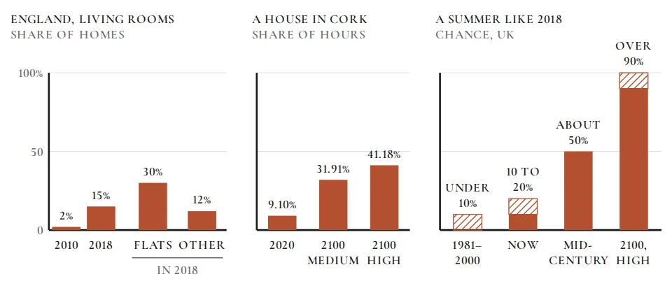
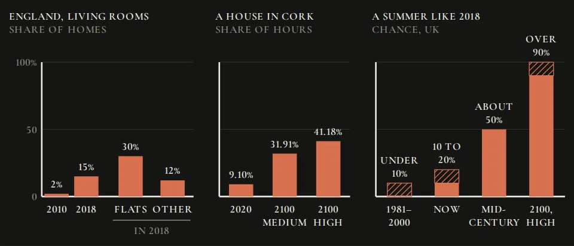
A changing climate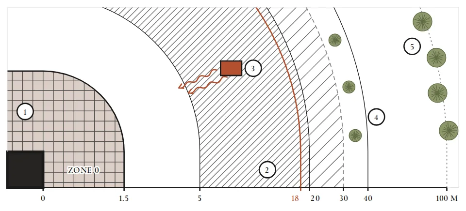
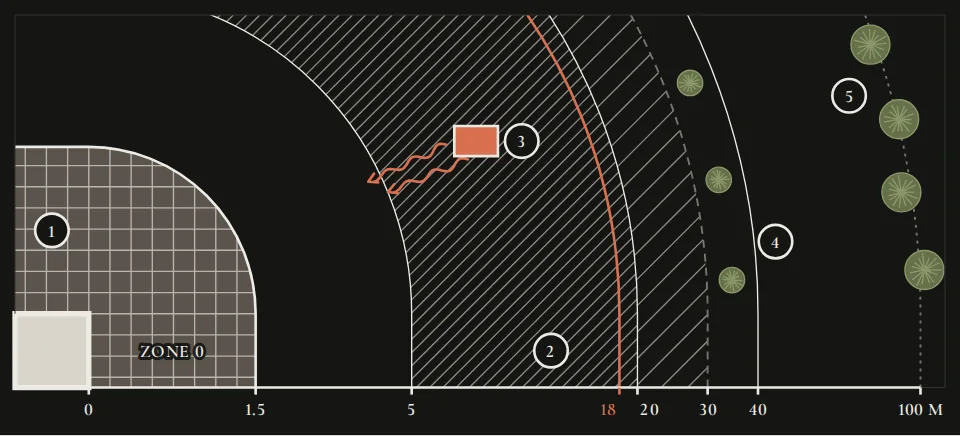
Fire at the edge of the lot
In November 2018, a wildfire driven by winds of up to twenty-two metres per second, about eighty kilometres an hour, swept into the town of Paradise, in northern California. Embers carried the fire as far as six point three kilometres ahead, into the town. The Camp Fire destroyed eighteen thousand eight hundred and four structures and killed eighty-five people.
Afterwards, researchers looked at a random sample of four hundred homes to find out what had decided which ones survived. Homes built before 1997 survived only eleven and a half per cent of the time; homes built later, thirty-eight and a half per cent. And one of the strongest factors was the house next door: a home within eighteen metres of another building that burned had a survival probability of under six per cent, against thirty-five per cent beyond that distance. Houses set fire to houses.
This last lesson is about designing for a climate that's changing: for heat that buildings in cool countries were never designed for, for fire at the edge of the lot, and for weather that hasn't happened yet.
How it works
Start with heat. In England, a country built to keep warm, researchers found that two per cent of living rooms overheated in the summer of 2010, about six hundred thousand homes, but fifteen per cent in 2018, England's hottest summer on record, about three point six million. In flats, it was thirty per cent. Insulation made no significant difference, and the researchers warned that computer models can be unreliable predictors of overheating.
The room that matters most is the bedroom, because people need cool nights to sleep and to recover from hot days. The British design test, called TM59, fails a bedroom if it's above twenty-six degrees for more than one per cent of the hours between ten at night and seven in the morning, about thirty-three hours in a year. One study of measured homes found that sixty-five per cent of bedrooms in Passive Houses failed it, against forty-three per cent in ordinary homes, though the two were measured in different years. The authors point to bedrooms that are hard to air while people sleep, under standards that judge the whole house. And in a house in Cork, in Ireland, designed with the Passive House software, averaging its six rooms into one, as that software does, hid more than half of the bedroom overheating. The same house's overheating was projected to rise from about nine per cent of hours in 2020 to about thirty-two per cent by 2100 on a middle path of emissions, or forty-one per cent on a high one.
Regulation is catching up. In England, since June 2022, new homes must limit the summer sun through their windows and provide a way to remove heat, under Approved Document O. It's realistic about how people live: in the modelling, upper-floor windows are assumed to open at night only if the room is above twenty-three degrees at eleven o'clock, and windows stay shut where night noise is loud.
The toolkit for heat is the whole book's toolkit for hot climates, brought north: shade the glass, especially on the east and west, with external shading; limit the glazing; ventilate across the house and at night, with windows that can be left open safely and quietly; use mass with night cooling; add ceiling fans; plant trees; and design the bedrooms, room by room, for hot nights.
The best examples
Fire is the other new threat at the edge of many towns, and the research is clearer than you might expect about where it attacks. Homes ignite from embers, from radiant heat and from direct flame. California's fire agency now describes a Zone Zero: the first five feet, about one and a half metres, around the house. It should be hard surfaces, with no bark mulch, no dead plants, no debris on the roof, in the gutters or on the deck, and no fence of anything that burns attached to the house. The Insurance Institute for Business and Home Safety adds that plants within that zone raise the heat reaching the house, even when they're well watered.
Tests with a machine that fires a shower of burning embers at full-size building parts, run by the US National Institute of Standards and Technology with Japan's Building Research Institute, showed why. A bed of dry pine needles beside a wall smouldered, burst into flame and melted the vinyl siding. Embers passed through the wire mesh of vents and set fire to material behind it, even with the finest mesh tested. And not a single pane of glass broke in any of the tests.
Further out, the studies disagree about distance. In San Diego County, a study of two thousand buildings found that clearing vegetation helped most five to twenty metres from the house, with no extra benefit beyond thirty. In Victoria, in Australia, after the fires of 2009, houses surrounded by planted gardens within forty metres were lost thirty-eight per cent less often than those surrounded by native bush. And at Paradise, tree cover as far as a hundred metres away still made a difference.
And then there's the weather we design with. Weather files built from past records underestimate the future. In 2025, the Chartered Institution of Building Services Engineers in Britain issued new files for twenty-eight regions, with projections for the 2030s, 2050s and 2080s, and three kinds of hot summer for testing overheating: a moderately hot one, the most intense, and the longest. The method matters: for one house in Rome, two ways of making future weather files predicted rises in cooling of about seventy and about a hundred and seventy per cent. And the Met Office puts the chance of a British summer as hot as 2018's at under ten per cent in the late twentieth century, ten to twenty per cent now, about fifty per cent by the middle of this century, and over ninety per cent by 2100 if emissions stay high. Britain first reached forty degrees in July 2022.
Rules of thumb
One. Design bedrooms for hot nights: test each bedroom, not an average of rooms, against a limit like TM59's.
Two. Shade and ventilate: external shading on the east, west and south, and windows that can be left open at night, safely and quietly.
Three. Keep the first one and a half metres around a house in fire country free of anything that burns: hard surfaces, no mulch, no debris, and no burnable fences attached.
Four. Build an ember-resistant skin: vents, gaps, gutters and decks detailed so that embers can't lodge and catch, and space buildings so that one burning house doesn't ignite the next.
Five. Design with future weather, not past weather, and test with more than one kind of future year.
Where it fails
The models are the weak point: English researchers warn that they can be unreliable predictors of overheating, and averaging rooms hid the problem at Cork. The fire research disagrees about distances, from twenty metres to a hundred, and building codes don't always make the difference they promise: at Paradise, homes built just before and just after California's 2008 wildfire code survived at thirty-seven and forty-four per cent, a difference too small to be sure of. Rules that assume windows are opened fail when people close them against noise or fear. And no one knows exactly what the weather of 2080 will be. That's the reason for designing buildings that can adapt: that can be shaded, opened, cooled and changed by the people who live in them.
Recap
To sum up. The climate is changing faster than buildings are. In England, fifteen per cent of living rooms overheated in the record summer of 2018, against two per cent in 2010, and in one study nearly two-thirds of Passive House bedrooms failed the TM59 night test. In fire country, the first one and a half metres around a house, the ember-resistance of its skin and the distance to the neighbours decide much of its fate. And designing with future weather files, not past ones, is now part of the job. The whole toolkit of this book, shade, air, mass, water, light and living things, is the starting point for all of it.
Check yourself
First question. What does the TM59 bedroom test check?
Whether a bedroom is above twenty-six degrees for more than one per cent of the hours between ten at night and seven in the morning, about thirty-three hours a year.
Second question. What is Zone Zero around a house in fire country?
The first five feet, about one and a half metres, around the house: kept to hard surfaces, with no bark mulch, dead plants, debris or attached fences that can burn.
Third question. At Paradise, what did being within eighteen metres of a burned building do to a home's chances?
Its survival probability fell to under six per cent, against about thirty-five per cent beyond that distance. Houses set fire to houses.
Sources and further reading
- The Camp Fire: E. E. Knapp and colleagues, Fire Ecology 17 (2021); A. Maranghides and colleagues, A Case Study of the Camp Fire: Fire Progression Timeline, NIST Technical Note 2135 (2021).
- Overheating in England: K. J. Lomas, Buildings and Cities 2 (2021).
- TM59 and Passive House bedrooms: J. Jang and colleagues, Energies 15 (2022); E. Finegan, PhD thesis, Munster Technological University (2022).
- Approved Document O: HM Government, Overheating: Approved Document O (2021).
- Zone Zero and fire research: CAL FIRE; Insurance Institute for Business and Home Safety, Wildfire; S. L. Manzello, S. Suzuki and Y. Hayashi, NIST Special Publication 1126 (2011); A. D. Syphard, T. J. Brennan and J. E. Keeley, International Journal of Wildland Fire 23 (2014); P. Gibbons and colleagues, PLOS ONE 7 (2012); research edition, chapter 8 (C8.11 to C8.13).
- Future weather: CIBSE, Weather data (2025); M. P. Tootkaboni and colleagues, Climate 9 (2021); Met Office, UK and global extreme events: heatwaves.